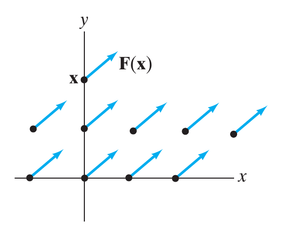
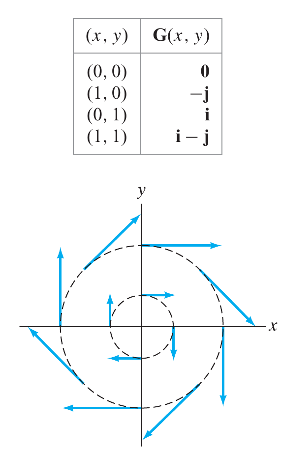

Calculo III

Conceito de Campo
Campo escalar
| Definição Um campo vetorial em $\mathbb{R}^n$ é um mapeamento definido como \[ \mathbf{F}: X \subseteq \mathbb{R}^n \to \mathbb{R}^n \nonumber \] |
Uma definição alternativa, e mais simples que a anterior é
| Definição Seja $X$ uma região no espaço e seja $\mathbf{F}$ uma função vetorial definida em $X$. Então, a cada ponto $P \in X$, $\mathbf{F}$ associa um único vetor $\mathbf{F}(P)$. A região $X$, juntamente com os correspondentes vetores $\mathbf{F}(P)$, constitui um campo vetorial. Dizemos também que $\mathbf{F}$ é um campo vetorial sobre $X$ |

Como nos trabalhamos em $\mathbb{R}^2$ e $\mathbb{R}^3$, ambas das definições nos dizem que a cada ponto do espaço, $\mathbf{x}$, em X, associamos um vetor $\mathbf{F}(\mathbf{x})$ o qual é representado por setas com inicio no ponto $\mathbf{x}$.
Exemplos
- Suponha $\mathbf{F}: \mathbb{R}^2 \to \mathbb{R}^2$ é definida por $\mathbf{F}= \mathbf{a}$, onde $\mathbf{a}$ é um vetor constante. Assim $\mathbf{F}$ atribui $\mathbf{a}$ a cada ponto em $\mathbb{R}^2$, como mostra a figura ao lado
- Seja $\mathbf{G}: \mathbb{R}^2 \to \mathbb{R}^2,\;\mathbf{G}(x,y)=\,y\mathbf{i} +x \,\mathbf{j}$. Para visualizar a forma da função podemos montar uma tabela com dados, mas isso resulta um pouco complicado. Para melhor entender vamos bincar um pouco, note que \[ \left| \mathbf{G}(x,y) \right| = \left| y\mathbf{i} +x \,\mathbf{j} \right| = \sqrt{y^2 + x^2}\;\;=\left| \mathbf{r}\right| \]
